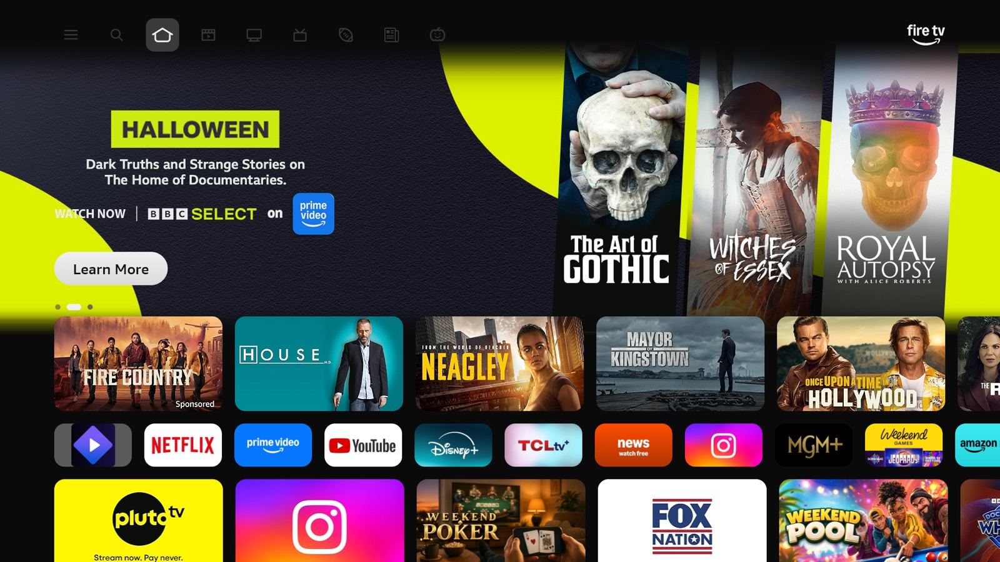
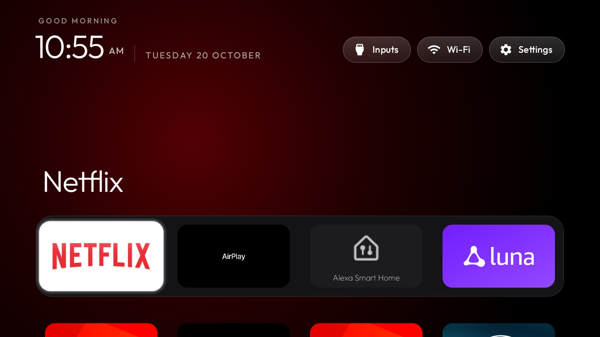

Take the ads and telemetry out of your Fire TV, and put a calm, Apple TV-style home screen on top of it with your apps in a dock. One command at a time, and every step can be undone.
Left: the stock home screen, sponsored rows and all. Right: the same TV with the launcher up front. Amazon's home is still installed underneath; it's just covered.


before · stock after · quietYou run these from a Mac or Linux computer on the same Wi-Fi as the TV. Set the TV's IP once and reuse it.
Settings → My Fire TV → About, select the device name seven times. Then Developer Options → ADB Debugging, and note the IP under About → Network.
Clone it, make the ADB environment, and probe the TV. You should see Amazon as the brand.
git clone https://github.com/GaneshVarma1/cleanyourtv-firetv.gitexport TV_HOST=192.168.1.50 && tools/venv/bin/python -I tools/tv.py --probeApplies the tested list. Each package is disabled, not uninstalled, and the previous state is saved so you can undo it.
tools/disable.sh examples/amazon-fire-tv-aftdec012e/debloat.txtEdit dock_apps in launcher/app/src/main/res/values/config.xml with the package names you use.
The script sees that Amazon holds Home and installs in Fire mode: Amazon's launcher stays on, and the launcher comes up when you press Home.
cd launcher && TV_HOST=$TV_HOST ./build-and-install.shFire OS keeps the Home button for Amazon's launcher, and won't let it be disabled. So this doesn't replace the home screen. It covers it.